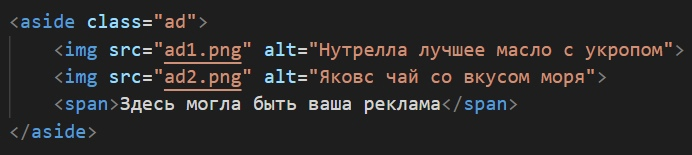
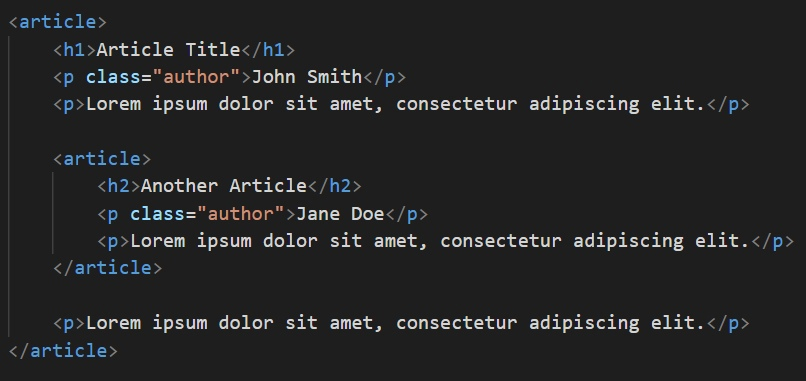
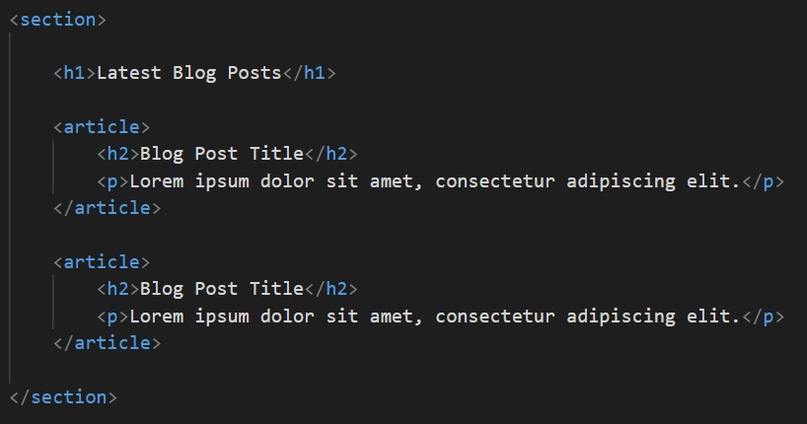

Структурирование контента в HTML: как не перепутать <div>,
<section> <article> и <aside>?
Еще одна причина любить и уважать HTML5 - его громадный вклад
в семантику кода. То есть код теперь имеет осмысленную и логичную
стуктуру. Для этого выведены специальные теги, которые служат удобным инструментом
создания понятной и легко читаемой структуры в коде.
<div>
Элемент <div> является, пожалуй, самым универсальным блочным
элементом. При этом у него нет полноценного самостоятельного значения —
он предназначен для группировки контента, который семантически никак не связан между собой
Использовать <div> нужно осторожно — он не имеет смысла для скрин ридеров
Настоятельно рекомендуем обращаться к элементу <div> только в крайнем случае,
когда больше никакие другие элементы не подходят!
Элемент <div> чаще всего используется как контейнер
для других элементов
<section>
В отличие от <div>, тег <section> применяется к общим
разделам контента, который может быть сгруппирован семантически.
Главное правило: элемент <section> уместно использовать только тогда,
когда его содержимое явно указывается в структуре. Например, в качестве
раздела.
В силу того, что содержимое тега <section> имеет семантическую общность —
«тему» — её необходимо указать с помощью заголовка. Часто
«тема» указывается сразу после открытия тега:
<article>
Тег <article> ещё более уточняющий и конкретный, чем тег <section>
Он также прмиеняется к семантически связанному блоку контента и должен
иметь заголовок. Его содержимое должно быть независимым и самодостаточным —
это, своего рода, отдельная статья. При изолировании содержимого тега <article>
от остальной части страницы должны сохранятся его смысли законченность.
Чаще всего тег <article> применяется к статье на сайте, к отдельной новости, посту блога,
сообщению форума или комментариям:
<aside>
Тег <aside> тоже применяется к блоку для семантического указания
раздела. Но у него есть важное отличие от <section> или <article>
: он представляет блок контента, отношение которого к содержимому
документа косвенное или вообще отсутствует. Тег <aside> независим
(буквально, в стороне) от остального контента. То есть, он
может бть вырван из одной страницы и вставлен в другую и при этом не
потеряет свою актуальность.
Чаще всего тег <aside> применяется для боковых панелей, блоков с
рекламными баннерами, сносок и другой информации, которая отделена от
основного содержимого страницы:

Применение <div>, <section>, <article> и <aside>
если контент не является семантические связанным —
используется <div>.
если контент семантически связан и относительно независим от остального
содержимого страницы — используется <article>.
если контент связан с содержимым всей страницы —
используется<section>.
тег <aside>, как было замечено выше, используется для обособления
контента, который связан по смыслу между собой, но при этом не
связан (слабо связан) с остальным содержимым страницы.
Для простоты восприятия проиллюстрируем всё это графически:
Комбинирование элементов
Теперь рассмотрим ключевые особенности объединения этих элементов
вместе.
<article> в <article>
Элементы <article> можно вкладывать друг в друга. При этом
они по‐прежнему остаются самодостаточными. Предполагается,
однако, что содержимое внутреннего <article> связано с
содержимым внешнего.
Например, если в посте блога содержится цитата из другого поста —
она может быть «обёрнута» в свой <article>:

<article> в <section>
Подобным образом несколько тегов <article> можно «обернуть»
в <article>.
Например, так можно поступить на странице блога, где отображаются последние
сообщения. Контейнером для всех постов будет тег <section>,
а каждый такой пост обособляется тегом <section>:

<section> в <article>
Возможен и обратный вариант, когда каждый тег
<article> может иметь один или даже несколько
тегов <section>.
Например, эта статья, если была бы частью страницы, могла
бы быть размечена так: